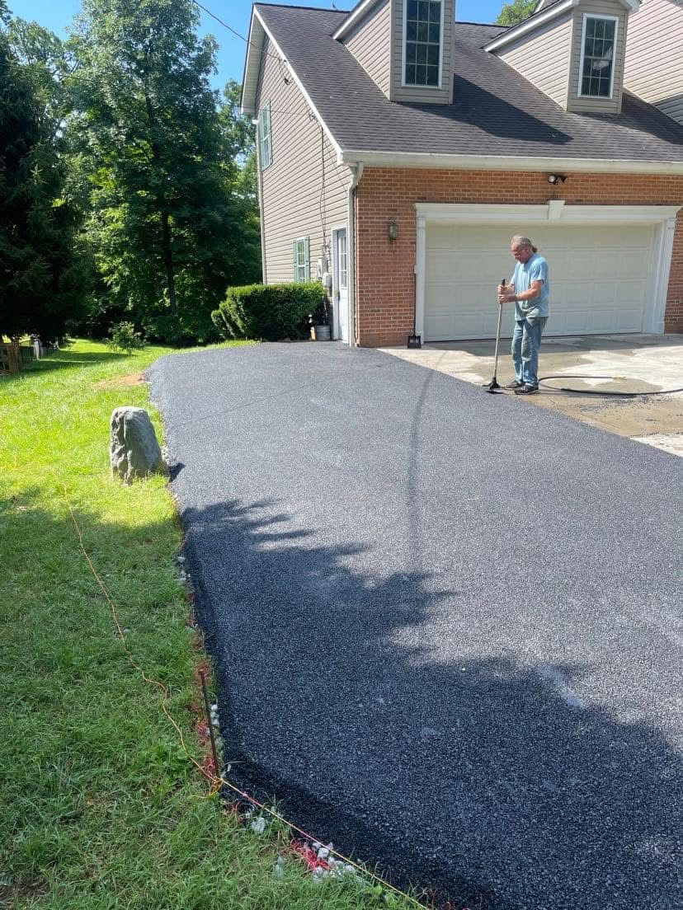

How Much Does Asphalt Paving Cost in 2026?

Whether you're building a new home near Martinsburg or replacing a worn-out driveway in Inwood, the first question is always the same: how much is this going to cost? The honest answer is that it depends — but we can break down exactly what drives the price so you know what to expect before you call for an estimate.
Average Cost Per Square Foot
In the WV Eastern Panhandle and surrounding Pennsylvania counties, homeowners typically pay between $3 and $7 per square foot for a standard asphalt driveway. That puts a typical two-car driveway (roughly 600 square feet) in the $1,800 to $4,200 range. Larger projects like parking lots or long rural driveways will fall toward the lower end of the per-square-foot range because of economies of scale.
What Affects the Price?
No two paving jobs are the same. Here are the biggest factors that move the needle:
- Size and shape — A straight, rectangular driveway is faster and cheaper to pave than one with curves, slopes, or tight turnarounds. Many properties in Gerrardstown and Berkeley Springs have hilly terrain that requires extra grading work.
- Base condition — If the existing gravel or stone base is solid, you can pave directly over it. If the base has eroded, sunk, or was never properly installed, it needs to be regraded or replaced first. This is the single biggest variable in paving cost.
- Asphalt thickness — Residential driveways usually get 2 to 3 inches of hot-mix asphalt. Parking lots and driveways that handle heavier vehicles (trucks, RVs, equipment) may need 3 to 4 inches for durability.
- Drainage and grading — Proper water runoff prevents premature cracking. If your lot needs regrading, swales, or culvert work, that adds to the project scope.
- Removal of old pavement — Tearing out and hauling away a deteriorated driveway adds cost, but it's often necessary when the old surface is too damaged to overlay.
- Time of year — Asphalt plants run at full capacity from late spring through fall. Scheduling in the shoulder season (early spring or late fall) can sometimes offer more flexibility on timing, though material costs stay relatively stable.
Asphalt vs. Other Driveway Options
Asphalt isn't the only choice, but it hits the sweet spot of cost and durability for most Eastern Panhandle homeowners:
- Gravel — $1 to $3 per square foot. Cheapest upfront, but requires regular regrading and isn't ideal for steep slopes.
- Tar & chip — $2 to $5 per square foot. A great middle ground with a rustic look. See our full comparison.
- Asphalt — $3 to $7 per square foot. Smooth, clean appearance with a 15–25 year lifespan when maintained with periodic sealcoating.
- Concrete — $6 to $12 per square foot. More expensive and can crack in freeze-thaw cycles, but lasts longer with minimal maintenance.
How to Get the Most Value
A few smart decisions can save you money without cutting corners:
- Invest in the base. A properly graded and compacted stone base is the foundation of a long-lasting driveway. Skimping here leads to premature cracking and costly repairs.
- Sealcoat every 2–3 years. A $200–$400 sealcoat can add years to your driveway's life and keep it looking fresh. It's the best return on investment in driveway maintenance.
- Fix cracks early. Small cracks are cheap to fill. Left alone, water gets in, freezes, and turns a $50 repair into a $5,000 repaving job. Know the warning signs.
- Get multiple estimates. Prices vary between contractors. But beware of quotes that seem too good to be true — thin asphalt, skipped base work, and no compaction will cost you more in the long run.
Why Choose a Local Paving Contractor?
National chains and out-of-area crews may offer low prices, but they often don't understand the specific challenges of paving in our region. The Eastern Panhandle's clay-heavy soils, hilly terrain, and freeze-thaw winters demand experience with local conditions. A contractor who knows the difference between grading a flat lot in Shepherdstown and cutting a hillside driveway in Berkeley Springs will deliver a better result that lasts longer.
Get a Free Estimate
At A+ Paving & Landscaping, we provide honest, detailed estimates with no pressure and no hidden fees. We'll walk your property, assess the base, and explain exactly what the job involves. Serving homeowners and businesses across the WV Eastern Panhandle and Pennsylvania. Contact us today or call (304) 579-3872 for your free estimate.